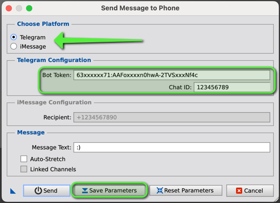

Keywords: Telegram, iMessage, Pushover, Notifications, Image, PixInsight, SendMessageToPhone, Setup, Configuration, Messaging
1 Introduction
[hide]
The SendMessageToPhone script allows users to send images to their phones directly via Telegram, iMessage (Mac only), or Pushover. This script also serves as the central configurator of things like the NotificationEventScript.
This document will guide you through the process of setting up the SendMessageToPhone script and using it to send notifications.
2 Setup
[hide]
In order to use the SendMessageToPhone script, you need to configure it to send messages and images via your preferred messaging platform: Telegram, iMessage, or Pushover. Follow the detailed steps below to set it up.
Step 1: Open the SendMessageToPhone script in PixInsight's Script Menu.
Step 2: Select the messaging platform you would like to use:
- Telegram
- iMessage
- Pushover
Step 3: Configure the necessary fields
- For Telegram: Enter your Telegram Bot Token. You can obtain the token by creating a bot with BotFather in Telegram Enter the Telegram Chat ID. This can be found by visiting https://api.telegram.org/bot<YourBotToken>/getUpdates, where you replace <YourBotToken> with the token you got from BotFather.

- For iMessage: Enter the recipient's AppleID Note: iMessage sending is only supported on macOS. If you're running the script on another platform, please use Telegram or Pushover instead
- For Pushover: Enter your User Key and App Token. You can obtain these by creating an account at https://pushover.net and registering an application. Pushover supports image attachments. The script will send both a text message and the active image as a JPEG.
- Autostretch: If your target image is still in the linear phase, it's a good idea to do an autostretch on the image, as a non-stretched JPEG will generally show up all-black
- Linked: For color images, this determines whether the autostretch should be linked or unlinked. The option is ignored for mono images.
Step 4: Run the script
The script will be run on the active image window. If there is no active window, no image will be sent.
3 Usage
[hide]
In addition to running it on the active image window, you may also save (any number of) instances as process icons. They may have different parameters. The process icon can be dragged onto any image and the image will be sent out according to the parameters selected.
4 Limitations
[hide]
The script has a few limitations:
- Telegram: Requires curl to be installed and working. Make sure your system has internet access.
- iMessage: Only available on macOS. If you are using Windows or Linux, you need to use Telegram or Pushover.
- Pushover: Requires curl. Your image must be converted to a JPEG, and its size must comply with Pushover limits (currently 2.5MB max). If the image is too large, the script will attempt to downsample it.
5 Troubleshooting
[hide]
If you face any issues with the notifications, here are some common fixes:
No notifications received?
- Double-check your Telegram Bot Token and Chat ID (for Telegram), Recipient (for iMessage), or User Key / App Token (for Pushover).
- Ensure that curl is working properly and is available in your system path.
Image not received via Pushover
- Ensure the image is not too large. The script automatically reduces the image size if it exceeds recommended limits, but Pushover has a strict 2.5MB file limit.
- Make sure the file is being saved as a valid JPEG and your API keys are correct.
Error: "No valid target image found"
- This error occurs when no active image is found in PixInsight when the script is triggered. Ensure that an image window is open.
Copyright © (c) 2025 Luca Bartek